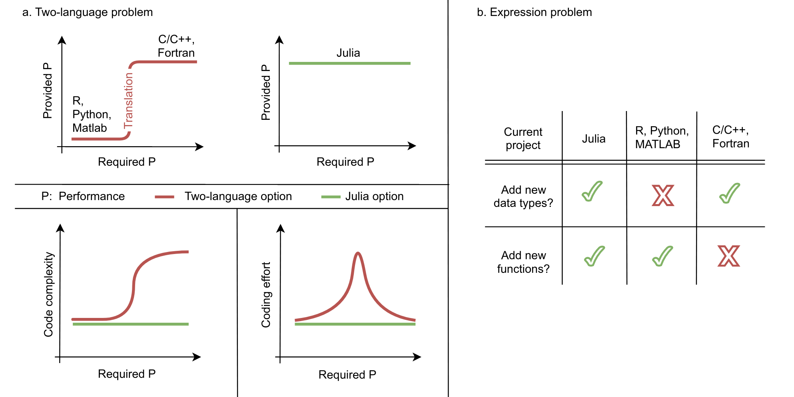
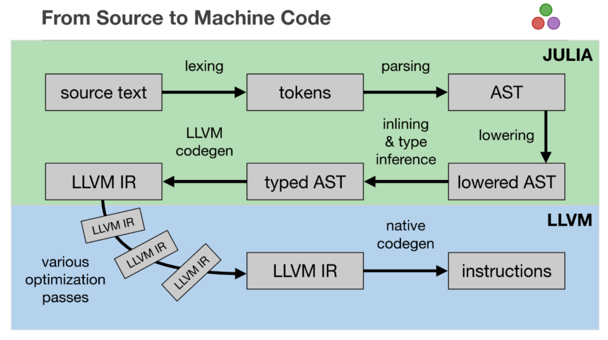

Lab 3: Introduction to Julia#
There are traditionally two categories of computer languages: Compiled (C/C++, Fortran) and Interpreted (Python, R).
Julia language has inherited the advantage from both categories.
Some helpful links:
Julia documentation (https://julialang.org/)
Julia analysis demo at PyHEP 2023 (Moelf/PyHEP_2023_JuliaDemo)
Talk (https://jiling.web.cern.ch/jiling/dump/2021_Harvard_JuliaHEP.html)
Motivation#
 Ref: https://arxiv.org/abs/2109.09973
Julia is a solution to the “two-language problem,” e.g. using writing performant C++ code and a high-level Python wrapper.
Consider this function taken from Numba’s introduction. Numba is great because:
you don’t write C++
you can write fast loop!
Python (Numba)#
@jit(nopython=True)
def go_fast(a):
trace = 0.0
for i in range(a.shape[0]):
trace += np.tanh(a[i, i])
return a + trace
In [2]: x = np.arange(100).reshape(10, 10)
In [3]: %timeit go_fast(x)
814 ns ± 5.2 ns (mean ± σ) # Numba
16500 ns ± 70.5 ns (mean ± σ) # CPython
but it does have draw back (all JIT x Python solutions do): it’s not compatible with all Python.
the Julia “sale” is that:
you still avoid C++
you can write fast anything!*
there’s no compatibility issue and “unhandled” construct, it’s just the language itself
Julia#
function go_faster(a)
trace = 0.0
for i in axes(a, 1)
trace += tanh(a[i, i])
end
return a .+ trace
end
julia> x = reshape(0:99, 10, 10)
julia> @benchmark go_faster($x)
158.947 ns ± 100.451 ns (mean ± σ) # σ due to GC
Array basics#
# A function makerandom with two methods is declared.
# This looks just like two functions with the same name but with different arguments.
# An array r with n Float64 elements is declared; element i is referred to as r[i].
# The Base function round(T,m) rounds the number m to the closest integer and converts to type T (here Int)
# The Base function rand() generates (when given no arguments) a random Float64 in [0,1).
# The functional difference between the methods is Float64 (first) vs Float32 (second) numbers returned.
# In the second method r[i]=rand() implies a loss of precision from 64 to 32 bit Float.
function makerandom(n::Int)
r=Array{Float64}(undef,n)
for i=1:n
r[i]=rand()
end
return r
end
function makerandom(m::Float64)
n=round(Int,m)
r=Array{Float32}(undef,n)
for i=1:n
r[i]=rand()
end
return r
end
makerandom (generic function with 2 methods)
# The function is called twice, with different arguments (example of multiple dispatch).
# In each case 5 times; n is assigned an integer-constant value, type will be Int (Int64).
# The Base function convert(Float64,n) converts the integer n to a Float64.
n=5
m=convert(Float64,n)
# The function is called with Int argument (first method dispatched)
# a will be the 5-element Float64 array returned by the function
a=makerandom(n)
for i=1:n
println(i," ",a[i])
end
1
0.09411252840062967
2 0.0108072814783724
3 0.6817531417860903
4 0.652045764128776
5 0.8234837982264
# The function is called with Float64 argument (second method dispatched)
# b will be the 5-element Float32 array returned by the function
a=makerandom(m)
for i=1:n
println(i," ",a[i])
end
1
0.26737255
2 0.013948989
3 0.60287315
4 0.39981413
5 0.6088479
Matrix multiplication#
# This function creates an n*n random matrix (similar to randomarray.jl but 2-dim array)
function randmatrix(n::Int)
mat=Array{Float64}(undef,n,n)
for j=1:n
for i=1:n
mat[i,j]=rand()
end
end
return mat
end
# Ask for matrix size and read it (stdin = standard input) using readline
# Text input has to be parsed to a type (here Int)
println("Give matrix size")
n=3
Give matrix size
3
# Create two random matrices and their product
# Note that "*" is actual matrix multiplication
a=randmatrix(n)
b=randmatrix(n)
c=a*b
# print the results
println()
println("A, B, A*B")
for i=1:n
println(a[i,:]," ",b[i,:]," ",c[i,:])
end
A, B, A*B
[0.3467715719876312, 0.7238614134325188, 0.05506714791352629] [0.4179709850738056, 0.2729078441331676, 0.26127326634376646] [0.3124956897820997, 0.6308146269306132, 0.5206262005002662]
[0.5887617282288764, 0.3699430467288307, 0.2778759715255368] [0.20580213886561127, 0.6653513151689086, 0.569977556194945] [0.4159926542397345, 0.6821154372521158, 0.45268790230275785]
[0.19719268930511058, 0.6814723756387202, 0.3318099532448555] [0.33746086042665646, 0.9907141272527589, 0.3166915378874342] [0.3346421674026255, 0.835962781342338, 0.5450265416942499]
# Element-by-element operations can be done with "." added to operator
# Here element-by-element multiplication
c=a.*b
println()
println("A, B, A elements multiplied by B elements")
for i=1:n
println(a[i,:]," ",b[i,:]," ",c[i,:])
end
A, B, A elements multiplied by B elements
[0.3467715719876312, 0.7238614134325188, 0.05506714791352629] [0.4179709850738056, 0.2729078441331676, 0.26127326634376646] [0.1449404555392623, 0.19754745779105623, 0.014387573603602339]
[0.5887617282288764, 0.3699430467288307, 0.2778759715255368] [0.20580213886561127, 0.6653513151689086, 0.569977556194945] [0.12116842295171651, 0.2461420926786205, 0.15838306717542155]
[0.19719268930511058, 0.6814723756387202, 0.3318099532448555] [0.33746086042665646, 0.9907141272527589, 0.3166915378874342] [0.06654481460274896, 0.675144309877779, 0.10508140437947093]
# Matrix inverse using Base function inv()
# Multiply inverse of A by A to check if OK
b=inv(a)
c=a*b
println()
println("A, 1/A, A*(1/A)")
for i=1:n
println(a[i,:]," ",b[i,:]," ",c[i,:])
end
A, 1/A, A*(1/A)
[0.3467715719876312, 0.7238614134325188, 0.05506714791352629] [0.6239018588004046, 1.8980766628802936, -1.6930968681802385] [1.0, -6.938893903907228e-18, 8.326672684688674e-17]
[0.5887617282288764, 0.3699430467288307, 0.2778759715255368] [1.3164921437716413, -0.9759614256020805, 0.5988390636248597] [2.220446049250313e-16, 1.0, -1.1102230246251565e-16]
[0.19719268930511058, 0.6814723756387202, 0.3318099532448555] [-3.074597082301051, 0.8764170777046324, 2.790073161830853] [2.220446049250313e-16, -1.1102230246251565e-16, 1.0]
Intro to Monte Carlo Simulation#
In physics, the term ”Monte Carlo” refers to the use of random numbers. Monte Carlo integration is the simplest of a wide range of ”Monte Carlo methods”, where averages are calculated using uniform random sampling.
Monte Carlo simulation methods are related to the elementary Monte Carlo integration methods that we are discussing here, but are based on more efficient non-uniform sampling schemes. We will learn more about the detail in the later part of this course.
# Calculates pi using a circle with radius r=1/2 (slightly faster than r=1) by MC sampling.
function pionebin(n) # samples and computes the average for one bin with n points
sum=0
for i=1:n
x2=(rand()-0.5)^2
y2=(rand()-0.5)^2
if x2+y2 <= 0.25
sum=sum+1
end
end
return 4.0*sum/n
end
pionebin (generic function with 1 method)
function samplepi(nbin,nsamp) # Doing MC sampling of nbin bins, each sampling nsamp points
av=0.
er=0.
for j=1:nbin
p=pionebin(nsamp)
av=av+p
er=er+p^2
println(j," ",p)
end
av=av/nbin
er=er/nbin
er=((er-av^2)/(nbin-1))^0.5
return av,er
end
samplepi (generic function with 1 method)
nbin=10
nsamp=10000
ap,ep=samplepi(nbin,nsamp)
println()
println("Final result and error: ",ap," ",ep)
1 3.154
2 3.1384
3 3.13
4 3.15
5 3.1544
6 3.1572
7 3.142
8 3.1444
9 3.1764
10 3.1424
Final result and error: 3.14892 0.004027924748283986
Under the hood#
Julia is able to show us what is happening “under the hood”

function f(x)
cos(x) + 2*x
end
f (generic function with 1 method)
@code_typed f(2)
CodeInfo(
1 ─ %1 = Base.sitofp(Float64, x)::Float64
│ %2 = invoke Base.Math.cos(%1::Float64)::Float64
│ %3 = Base.mul_int(2, x)::Int64
│ %4 = Base.sitofp(Float64, %3)::Float64
│ %5 = Base.add_float(%2, %4)::Float64
└── return %5
) => Float64
@code_llvm f(2)
; @ In[11]:1 within `f'
define double @julia_f_1630(i64 signext %0) {
top:
; @ In[11]:2 within `f'
; ┌ @ math.jl:405 within `cos'
; │┌ @ float.jl:206 within `float'
; ││┌ @ float.jl:191 within `AbstractFloat'
; │││┌ @ float.jl:94 within `Float64'
%1
= sitofp i64 %0 to double
; └└└└
; ┌ @ math.jl:407 within `cos'
%2 = call double @j_cos_1632(double %1)
; └
; ┌ @ int.jl:88 within `*'
%3 = shl i64 %0, 1
; └
; ┌ @ promotion.jl:321 within `+'
; │┌ @ promotion.jl:292 within `promote'
; ││┌ @ promotion.jl:269 within `_promote'
; │││┌ @ number.jl:7 within `convert'
; ││││┌ @ float.jl:94 within `Float64'
%4 = sitofp i64 %3 to double
; │└└└└
; │ @ promotion.jl:321 within `+' @ float.jl:326
%5 = fadd double %2, %4
; └
ret double %5
}
@code_native f(2)
.text
; ┌ @ In[11]:1 within `f'
pushq %rbx
movq %rdi, %rbx
; │ @ In[11]:2 within `f'
; │┌ @ math.jl:405 within `cos'
; ││┌ @ float.jl:206 within `float'
; │││┌ @ float.jl:191 within `AbstractFloat'
; ││││┌ @ float.jl:94 within `Float64'
vcvtsi2sd %rdi, %xmm0, %xmm0
; │└└└└
; │┌ @ math.jl:407 within `cos'
movabsq $cos, %rax
callq *%rax
; │└
; │┌ @ int.jl:88 within `*'
addq %rbx, %rbx
; │└
; │┌ @ promotion.jl:321 within `+'
; ││┌ @ promotion.jl:292 within `promote'
; │││┌ @ promotion.jl:269 within `_promote'
; ││││┌ @ number.jl:7 within `convert'
; │││││┌ @ float.jl:94 within `Float64'
vcvtsi2sd %rbx, %xmm1, %xmm1
; ││└└└└
; ││ @ promotion.jl:321 within `+' @ float.jl:326
vaddsd %xmm1, %xmm0, %xmm0
; │└
popq %rbx
retq
nopw %cs:(%rax,%rax)
nopl (%rax)
; └